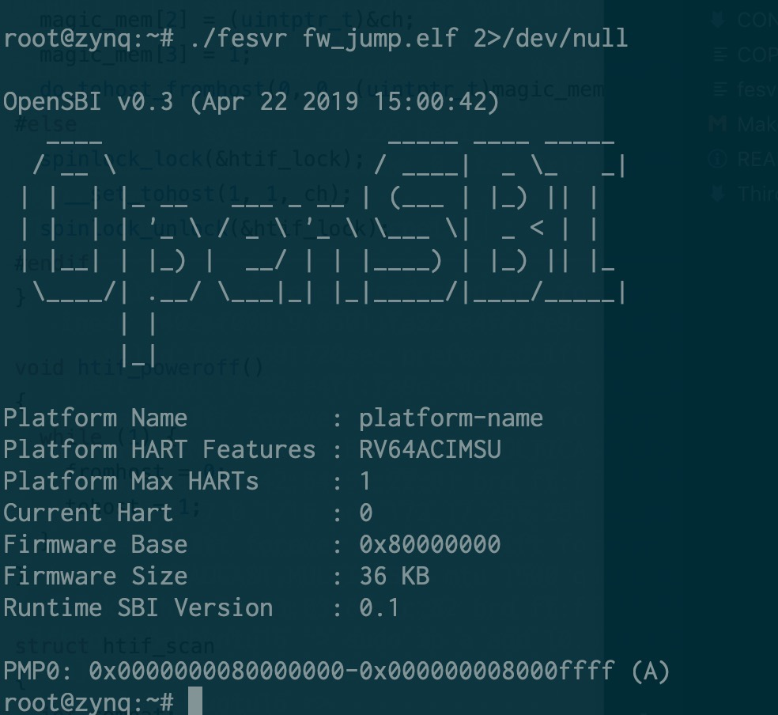

给 Rocket Chip 挂接串口外设¶
前言¶
最近在给 rCore 添加 Rocket Chip 支持。下面讲讲最近做了哪些工作，遇到了哪些坑，都是怎么解决的。
踩坑过程¶
Rocket Chip 运行代码¶
首先分析了一下已有的代码和工作方式，这个 Rocket Chip（ucb-bar/fpga-zynq）的设计大概是这样的：在 PS 上通过 fesvr 向 Rocket Chip 写入程序。Rocket Chip 本身暴露出一个 TSI，一个串口的调试接口，通过 Zynq Adapter 挂到了 PS 下的 AXI 总线，暴露出若干个寄存器，大概如下：
/**
* Address Map
* 0x00 - serial out FIFO data
* 0x04 - serial out FIFO data available (words)
* 0x08 - serial in FIFO data
* 0x0C - serial in FIFO space available (words)
* 0x10 - system reset
* 0x20 - req FIFO data
* 0x24 - req FIFO data available (words)
* 0x28 - data FIFO data
* 0x2C - data FIFO data available (words)
* 0x30 - resp FIFO data
* 0x34 - resp FIFO space available (words)
* 0x38 - nsectors
* 0x3C - max request length
*/
前面的是调试接口，后面的是 block device 和 network，我们暂时还没有用到这些 UCB BAR 做的私货。在 Vivado 中，地址 Offset 是 0x43C00000，所以代码中就这样访问对应的物理地址：
#define ZYNQ_BASE_PADDR 0x43C00000L
fd = open("/dev/mem", O_RDWR|O_SYNC);
assert(fd != -1);
dev = (uint8_t *) mmap(
0, sysconf(_SC_PAGESIZE),
PROT_READ|PROT_WRITE, MAP_SHARED, fd, ZYNQ_BASE_PADDR);
assert(dev != MAP_FAILED);
这块地址在 Device Tree 里也有对应的项，于是 PS 在访问的时候就会找到总线上的 Rocket Chip 的 Slave，也就对应到了上面的那个寄存器的 Map。接着就是由 fesvr 向 Rocket Chip 里写程序，然后跑起来了。
OpenSBI 输出¶
接着就需要先把输入输出做起来，需要移植一个 bootloader。相比之下，OpenSBI 明显比 bbl 更适合于这个用途，于是拿着 OpenSBI 就拿来改了。考虑到 fesvr 采用的是 htif 进行输入输出，于是从 bbl 里抄了相关代码过来，得到了正确的输出：

rCore，启动！¶
接下来，就想着怎么把 rCore 丢进去跑。把 payload 替换掉，丢进去，gg 了。一直出现一个玄学的问题，只要我修改页表，就出现 instruction access fault。也一直没有找到真实的原因，最后把 PMP 保护关了就好了。。怀疑是 Rocket Chip 实现有误。
又做了一些小的修改和适配，用户态也可以正常跑起来了。但是，现在串口只能轮询读取，而 htif 是通过读写内存进行的，也没有类似 MSI 的机制（现在想了想，其实可以，给 PS 挂一个 AXI Interrupt Controller，采用软件产生中断模式，然后接到 Rocket Chip 上，其实也是可以的），另外 Rocket Chip 原来的 Config 还没有向外暴露中断，我想挂一个串口也得让 Rocket Chip 访问得到。于是就开始了阅读 Chisel 代码然后魔改的过程了。
魔改 Rocket Chip¶
其实算不上魔改，克服了对 Rocket Chip 的恐惧，仔细阅读代码以后，发现还是比较容易理解的。譬如，我要添加一个外部总线，只需要添加一句：
那么对应地，就多了一片地址映射：
意味着，只要我在 Rocket Chip 里访问这片地址，那么就会访问这个 AXI 总线上的外设了。但是事情没有这么简单，在踩了很久的坑以后才最终解决。。
AXI 总线地址的计算方式¶
首先谈谈 AXI 总线上地址是怎么计算的。AXI 总线是一个星形结构，一个 Master 多个 Slave，在这里出现的例子是：
- PS 是 Master，Rocket Chip 是 Slave — 刚才谈到过的那片 register space
- Rocket Chip 是 Master，PS 是 Slave — 让 Rocket Chip 访问 DDR 控制器
- Rocket Chip 是 Master，外设 是 Slave — 这就是现在要做的事情
之前省略没说的是上面的第二点，就是让 Rocket Chip 也可以拿到内存用。那问题来了，怎么让 Rocket Chip 和 ARM 上的 Linux 不要打架？把地址空间分成两块就好了：
wire [31:0] mem_araddr;
wire [31:0] mem_awaddr;
// Memory given to Rocket is the upper 256 MB of the 512 MB DRAM
assign S_AXI_araddr = {4'd1, mem_araddr[27:0]};
assign S_AXI_awaddr = {4'd1, mem_awaddr[27:0]};
这样做，就透明地把 Rocket Chip 看到的内存空间都映射到了实际内存的 [256MB, 512MB) 这片空间上了。
注：我实验用的板子实际上有 1GB 的 DRAM，但实际上已经足够用了，所以就没有改原来 zedboard 的配置。
我在前面也提到，在 PS 上访问 0x43C00000 就是对应了 Zynq Adapter 的 0x0 地址。这里也是，在 Rocket Chip 上访问 0x0 的地址，我强行改成了 0x10000000，然后 Offset 是 0，所以最后到内存就是 0x10000000 的地址了。
所以 AXI 总线上 Slave Register 的地址 = Master 地址 - 匹配到的 Slave 的 Offset 地址。但是，如果只有单个 Slave 的时候，AXI Interconnect 可能不检查地址范围，而是直接截断，但在有多个 Slave 的时候，会先检查地址范围，如果找不到就返回错误。这个问题让我困惑了许久，直到我挂上了 System ILA 看。。
AXI Uartlite¶
既然有了外设总线，第一个想到的外设就是 UART 咯，于是加了一个 AXI Uartlite，用 AXI Interconnect 连到外设总线上。写了程序简单测试了一下，确实读取到了数据，然后也很快就可以成功地从串口读数据，写数据。于是我又加了一个串口，拉到 AXI Interconnect 第二个接口上，结果就不工作了。
细心的读者可能已经从我上面讲到的一些内容上猜到了问题所在。。但这一点直到后面我才明白发生了什么，后面会再讲到这里的问题。
AXI Interrupt Controller¶
接着，回到我们最初的目标，既然可以输入输出了，还要真的串口干啥？添加中断或者拉一路 JTAG 出来，脱离 PS 来进行调试。所以接下来需要从 Rocket Chip 中暴露外部中断。在原来的代码中，是直接关掉了的：
它的功能很简单，直接把中断置 0。但我要的是拉到外面，经过了一番挣扎：
val io = IO(new Bundle {
val ps_axi_slave = Flipped(adapter.axi.cloneType)
val mem_axi = target.mem_axi4.head.cloneType
val mmio_axi = target.mmio_axi4.head.cloneType
val interrupts = Input(UInt(2.W))
})
io.mem_axi <> target.mem_axi4.head
io.mmio_axi <> target.mmio_axi4.head
target.interrupts := io.interrupts
终于找到了正确的方法，拉出来两路中断信号。于是很开心地直接接到了 Uartlite 上，但是事情肯定不会这么简单：
Uartlite 是正边沿触发的中断，但是 Rocket Chip 期望的是高电平触发的中断。所以我们需要一个中断控制器来实现这个，加了一个 AXI Interrupt Controller。但是问题来了，我们还没解决那个只要加俩 Slave 就都访问不到的问题呢！于是到处挂 System ILA 调试，发现了问题所在：
我们之前提到，0x60000000 - 0x80000000 地址段是对应到了外部 AXI 总线的，这没错，但是，如果在 Rocket Chip 上读 0x60000000 的地址，到总线上还是 0x60000000 的地址而不是 0x0，而之前只有一个 Slave 的时候，没有真的去检查这个地址范围，所以找到了正确的寄存器，现在不行了，于是出错了。
解决方法也很简单，乖乖地把 Offset 调成 0x60000000 和 0x61200000，然后再映射到 rCore 的内核态里。一番挣扎，又参照了 Linux 的 Uartlite 驱动（发现了遗忘设置的 MER 寄存器，不认真阅读文档的后果），终于在 ILA 上看到 uartlite 的输出上有一个脉冲，紧接着看到中断控制器输出了一个 irq，然后 Rocket Chip 收到了 external interrupt。Cheers！
中断处理¶
事情虽然差不多解决了，但是还没有结束。收到了一个 interrupt 以后，打印了一下寄存器状态，马上又来下一个 interrupt 了。现在不仅要在 Rocket Chip 的 PLIC 上把中断给确认了（吐槽一下，Rocket 的 PLIC 文档也比较欠缺，我是照着 U54 核的地址找到，但是 U54 呢是一个 4+1 的组合，hart0 没有 M 态，所以我为了打开 hart0 的 S 态中断，要找 hart1 的 M 态地址，详见 SiFive 文档），在 AXI Interrupt Controller 上也得把中断给确认了。但还是不行，每次 interrupt controller 输出的 irq 拉低不久，uartlite 又出现了新的一次中断。
这次的问题很有戏剧性：处理中断的时候输出调试信息，调试信息把 tx fifo 写满了，uartlite 也会产生一个中断。。于是没完了。解决方法很简单，牺牲一些性能，每次输出的时候都等到 tx fifo 空了才写，然后在处理串口中断的时候不要输出调试信息。
这下没有新的问题了，串口中断终于是工作了。
总结和致谢¶
这么一番搞下来，对 Vivado 和 AXI 的相关知识都比较熟悉了吧，也踩了很多的坑。需要特别感谢 @cq_z4yx 提供的技术支持。
相关文档和链接：
- PG099 AXI Interrupt Controller
- PG142 AXI Uartlite
- OpenSBI 适配
- rCore 适配
创建日期: May 8, 2019